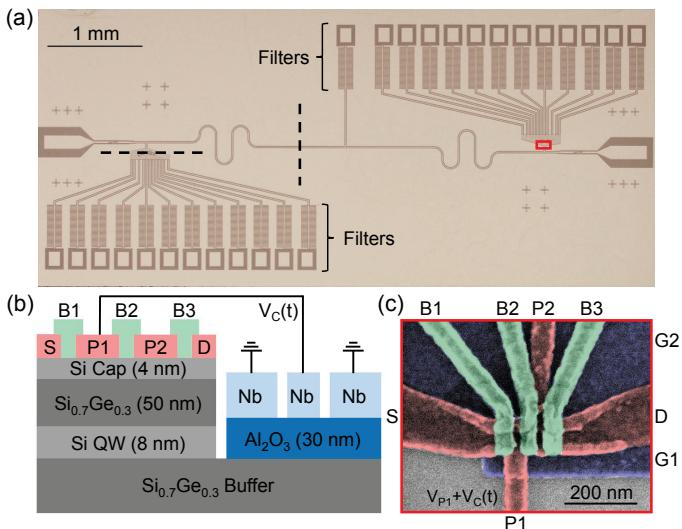
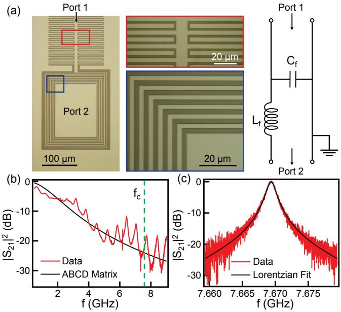

物理图像
在电路量子电动力学（circuit QED, cQED）中，微波谐振腔的电场涨落作用到半导体量子点电极上，将电压扰动转换为点内电化学势（电化学势）的调制；反过来，量子点电荷态的变化又会以电偶极矩的形式与腔电场发生耦合，表现为腔的谐振频率、线宽和透射（反射）幅值随比特态而变。这一”电压 ↔ 偶极矩”双向通道就是电荷–光子耦合的物理图像。
按”两端”来理解：
- 腔端：腔内电场通过耦合电极作用到量子点。电极与量子点之间的电容把腔末端的电压算符 转换为量子点一侧的电压扰动 ，再由杠杆臂（lever arm） 换算成电化学势的偏移 。
- 量子点端：电极失谐量改变时，双量子点的两个电荷态 、 之间发生相干振荡，量子点被周期极化，在腔侧看来这等价于一个时变电偶极矩。偶极矩的矩阵元与两个电荷态的相对位置以及电极杠杆臂直接相关——双量子点电极间距常在 量级，远大于单量子点，偶极矩也相应更大。
由于耦合是电偶极相互作用，对电荷噪声高度敏感；强耦合实验因此要在耦合强度、退相干速率、腔耗散和电子温度之间联合优化。
理论模型：哈密顿量与耦合公式
腔与量子点的电偶极相互作用
设腔模频率 ，产生、湮灭算符 、。量子点处感受到的腔电压算符
其中 是真空涨落场的均方根电压， 是腔的总电容。耦合电极对量子点的电容 与量子点总电容 之比 即杠杆臂 。在双量子点电荷态 基矢下，相互作用哈密顿量可写为
其中 是以 、 为基矢的泡利 算符。
将坐标旋转到双量子点本征矢 ，并用混合角 （ 是点间隧穿耦合， 是左右点失谐量）分解 ，得
其中 是电阻量子， 是腔的特征阻抗。
全局耦合强度与有效耦合
把与比特布居（）共线部分抽出来，定义”全局耦合强度”（bare coupling）
它是耦合电极–量子点电容比 、腔特征阻抗 与腔频 三者的乘积。在JC 模型的旋波近似（RWA）下，保留 与 两项，完整的电荷比特–腔哈密顿量为
其中 是电荷比特的跃迁频率。比对 JC 模型可见，电荷比特与腔的有效耦合强度为
混合角 因此具有”极化率”的物理意义：失谐量很小（）时 ，电子波函数均分到两个点，量子点的极化率达到最大， 取到 ；失谐量很大（）时 ，电子被局限在一个点内，。
对 阶高阶模的耦合强度为
即与模频率比的平方根成正比。
透射系数与腔响应
对透射式共面波导腔，利用输入–输出理论拟合实验数据，可得透射系数
其中双量子点的磁化率
按实部、虚部分解，腔的频移与展宽分别为
对反射式腔，相应的反射系数
其中 由内部损耗 和外部损耗 （线耦合至传输线）共同决定。当 很小或 很大、 时，、 简化为无加载谐振腔的洛伦兹响应。
真空 Rabi 振荡与强耦合判据
把比特制备到激发态，演化在 与 之间以速率 振荡，频域上即得到真空 Rabi 劈裂。要求劈裂可分辨，需要
即系统进入强耦合区。系统中总耗散的有效线宽为 ，真空 Rabi 振荡可被观测的条件是 ，即 。
色散极限与腔频移动
当比特–腔失谐远大于耦合（）时，JC 哈密顿量在二阶微扰下化为
由此得到色散读出的核心：腔频依比特态移动 ，相干读取比特态而几乎不扰动比特本身。
杠杆臂的提取
杠杆臂 是电化学势–电压转换系数，直接决定了腔电压扰动被放大到失谐量多少倍。常用提取方法有三种：
- 库仑菱形法：由相邻电子数对应的库仑菱形，得到加电子能 与栅压周期
利用菱形两条边的斜率可独立校验 的电压–能量转换关系。在 Si/SiGe 三量子点中，由库仑菱形测得电极 lever arm 约为 。2. 光子辅助隧穿法：对量子点电极施加微波驱动 ，电子可吸收 个光子（ 为整数）跨越失谐量，边带间距即一个光子的能量， 与电极电压周期 之比即 。例如固定 、微扰 即可读出 lever arm。3. two-tone 谱法：固定失谐 ，把驱动频率 与电极电压 联合扫描，bit 跃迁能与电极电压的拟合斜率 同样给出杠杆臂。
三种方法互为校验；实验中通常先用库仑菱形给出一个粗估值，再由光子辅助隧穿或 two-tone 谱做精细校准。
硅 cQED 器件架构：LC 滤波与损耗工程

硅混合 cQED 器件：λ/2 CPW 腔的两个电压波腹处各放一个 Si 双量子点；每条直流偏置线都串入片上 LC 低通滤波器以阻止腔光子经偏置线泄漏；剖面示出定义 DQD 的重叠 Al 栅与 Si/SiGe 层——为降低内损，腔中心极正下方的量子阱被选择性地挖除。图源：Mi et al. (2017), Fig. 1。
- 偏置线 LC 低通滤波。此前设计的显著微波泄漏来自腔与各直流偏置线之间的寄生电容——偏置线变成把 拉低的泄漏通道。对策是每条栅偏置线（以及腔的直流抽头）都串入片上 LC 滤波器：叉指电容 + 螺旋电感 ，足印仅 ，ABCD 矩阵模型与实测 吻合。同型无滤波器件 ，加滤波后升到 5400。
- 量子阱挖除。腔中心极与地之间的间隙电场最强、介质损耗最敏感——把该区域的量子阱与 选择性刻蚀掉可进一步压低内损。
- 波腹放置。两只 DQD 分别放在 腔的两个电压波腹处，最大化电场–电偶极耦合。

LC 滤波器与腔表征：(a) 片上 LC 滤波器（螺旋电感 + 叉指电容）的光学显微、局部放大与电路模型；(b) 实测滤波器传输 |S21|²（红）与 ABCD 矩阵预测（黑）一致；(c) DQD 处于库仑阻塞时的腔传输——洛伦兹拟合给出 Q=5400（f_c/Q 对应 κ/2π=1.4 MHz）。图源：Mi et al. (2017), Fig. 2。
腔的品质因子分解：、 对应总光子损耗率 ；Sonnet 电磁仿真给出输入输出耦合各 ，剩余 归于腔下介质层内损与 LC 滤波器的残余泄漏——实测滤波器在 处提供约 20 dB 衰减（ABCD 理论预期 24 dB），多极 LC 或带阻滤波是进一步的改进方向。在该架构上，零差测量的腔透射直接显示 DQD 电荷稳定图，点间电荷跃迁处的腔响应给出电荷–腔耦合 ——硅中电子与微波光子有效耦合、通往相干电子–光子相互作用的第一步（同一平台随后实现强自旋–光子耦合，见Samkharadze 2018）。在这一架构上把操控与读出全部搬到腔接口的全微波电荷比特方案，见电荷量子比特的”全微波操控”一节。
参数与量级
本站论文与典型文献给出的电荷–光子耦合参数如下（量级仅供参考）：
| 量 | 典型值 | 备注 |
|---|---|---|
| 腔特征阻抗 | （标准共面波导） 约 –（高阻抗腔） | 高阻抗腔由 SQUID 阵列、动态电感薄膜或几何 LC 实现 |
| 杠杆臂 | – | 库仑菱形、光子辅助隧穿或 two-tone 谱标定 |
| 比特–腔失谐 | 0 – 数 GHz | 在色散极限下 $ |
| 比特频率 | – | 与腔频 – 接近 |
| 双量子点电极间距 | 决定电偶极矩大小 | |
| 有效电荷–光子耦合 | – | Si/SiGe 三量子点 + TiN 腔测得 |
| 腔耗散 | 约 – | 高品质因数高阻抗腔可达数千 |
| 比特退相干 | 电荷比特约 – | 受电荷噪声主导 |
| 强耦合判据 | 典型满足于高阻抗腔 + 强混合角 | 失谐 时最易实现 |
| 硅 cQED 架构腔品质因子 | （ GHz、 MHz；无滤波同型器件 ） | Mi 2017 |
| 片上 LC 偏置线滤波器 | pF + nH，， 处衰减约 20 dB | Mi 2017 |
| 硅架构电荷–腔耦合 | MHz（点间电荷跃迁处腔响应提取） | Mi 2017 |
特殊情形：当耦合电容 与 的差可由外部电极独立调节时，，可大范围调谐耦合；这种设计曾实现最大 ，对应 ，进入超强耦合（ultrastrong coupling）区，RWA 失效。
实验特征与测量方法
真空 Rabi 劈裂的观测
制备一个与腔共振的电荷比特（），通过腔的透射/反射谱读取 或 ：当 时，单一洛伦兹线在 两侧分裂为两个峰，间距 。调节双量子点失谐 会通过 因子连续调制 ，劈裂幅度在 （）处最大。
色散频移与电荷稳定图读取
色散区 () 腔频随比特态偏移 。在零失谐时（）， 发散但被有限的 正则化；实验中以小驱动功率标定 即可反推 。沿比特失谐 扫描时，腔响应绘出抛物线型色散关系 ，这正是双量子点电荷比特的特征色散。
把扫描电极画成二维图， 在隧穿线附近发生幅值变化，可作为电荷稳定图的腔读取版本——量子点之间的隧穿线（ 增强）与量子点–源漏的充电线（ 减弱）形成对比，前者源于腔的频移被转化为反射幅值信号，后者源于电子跳迁同时耗散腔光子。
光子辅助隧穿与 two-tone 谱
在量子点电极上施加微波驱动 时，电子可吸收/发射整数个光子（PAT）。边带间距 与电极电压周期 之比即 lever arm ；同时，光子辅助隧穿在 上表现为沿失谐轴等距排列的亮线。
two-tone 谱用一路探测微波（）和一路驱动微波（）联合照射，扫描 与电极电压，bit 跃迁能量 表现为抛物线型共振峰。沿抛物线拟合可直接给出隧穿耦合 和 lever arm 。
量子点发光与腔增益
当源漏加上 的直流偏置、并在偏压三角形的 边附近工作时，电子可在源–漏偏置窗口内连续隧穿，并在每次非弹性隧穿中释放出能量为 的微波光子：当这一频率与腔频匹配时，光子被腔俘获并存储。若腔光子发射过程超过腔耗散，即 ，则在 或 上测到超过阻塞区本底的”腔增益”信号 （其中 是库仑阻塞区内的腔信号）。在 GaAs 双量子点–SQUID 阵列腔系统中，最大腔增益 在驱动频率 处获得。
强周期驱动的修饰耦合
在 Floquet 工程中，对比特或腔施加频率 的强周期驱动，系统的准能级与态布居随 重新分布，耦合 可由 effective coupling 替代， 依赖驱动幅度与相位。这条路径上可以观察到腔光子辅助的 LZSM 干涉（LZSM 干涉）。
退相干来源与权衡
电荷–光子耦合的优势——直接的电偶极接口——也带来劣势：电荷比特对电荷噪声高度敏感， 通常在数十到数百纳秒量级， 在 s 量级。硅锗、硅 MOS 体系的电荷噪声已被多次表征为 1/f 主导， 与 共同决定能谱的各向异性展宽。Si/SiGe 体系还通过对比声子耦合的贡献，确认电荷噪声在量子比特退相干中占主导。
因此，电荷–光子耦合常常是”探测用的接口”而不是”长寿命的存储单元”：许多实验用高阻抗腔的色散响应读出单自旋量子比特、单态–三态量子比特或共振交换量子比特的自旋态；自旋本身不直接与电场耦合，需要借助自旋–电荷混合或微磁体梯度来”借用”电荷比特的大电偶极矩。这一桥梁也由自旋–光子耦合一词专门刻画。
与其他概念的关系
- JC 模型与真空 Rabi 劈裂：电荷–光子耦合在 RWA 下回到JC 哈密顿量； 给出的真空 Rabi 劈裂是强耦合实验的标志。
- 高阻抗腔：耦合强度 ，因此高阻抗谐振腔（SQUID 阵列、动态电感薄膜）成为提升 的关键路线——材料侧的定量支撑是 NbN 薄膜标定（15 nm 膜 pH/□，对比 50 nm Nb 仅 0.5 pH/□），同设计下预期 、。
- 电荷稳定图与库仑菱形：电荷比特的 扫描由电荷稳定图的隧穿线标定；菱形半高与栅压周期给出库仑菱形的 与 。
- 双量子点与隧穿耦合：双量子点电极间距 决定电偶极矩大小；电极间隧穿耦合 决定电荷比特频率 与混合角 。
- 电荷噪声与退相干：耦合越强意味着量子点越”暴露”在电场中，电荷噪声的耦合通道也越显著， 越短。
- Floquet 动力学：强周期驱动下耦合强度会被重整，对应Floquet 动力学中的”修饰耦合”与 LZSM 干涉。
- 腔介导耦合：两个或更多电荷比特通过共享高阻抗腔的虚拟光子交换得到有效相互作用，是腔介导耦合最直接的实验载体。
- 色散读出与单发读出：色散区下 既可作单比特读出，也可作色散读出与远程比特间 iSWAP/CZ 门。
参考文献
- Mi, X., Cady, J. V., Zajac, D. M., Stehlik, J., Edge, L. F., Petta, J. R. Circuit Quantum Electrodynamics Architecture for Gate-Defined Quantum Dots in Silicon. Applied Physics Letters 110, 043502 (2017). DOI: 10.1063/1.4974536；arXiv:1610.05571（QAtlas 缓存：1610.05571）。
- 横向偶极耦合的对偶通道——纵向耦合（比特频率被腔坐标调制、辐射压的电路类比，硬件级纯纵向实现 g₀=2π×11.9 MHz 进入单光子强耦合区）见纵向耦合词条。
- 电荷–光子耦合在硅量子点–腔体系中的测定：Samkharadze et al., Science 359, 1123 (2018)。
完整文献库（含各篇站内全文页）见 参考文献库。